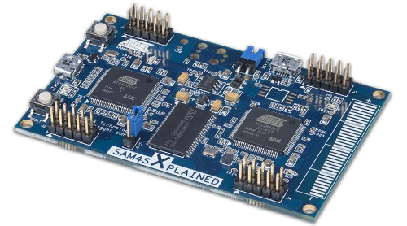

Sébastien NEDJAR
The LAB owning a bunch of Atmel SAM4S Xplained boards (ARM Cortex-M4 based), they will be used as a basis for initial work.

Some very interesting open source projects are already listed and will be the initial targets.
Updates will appear in a (ir)regular basis on the LAB Wiki